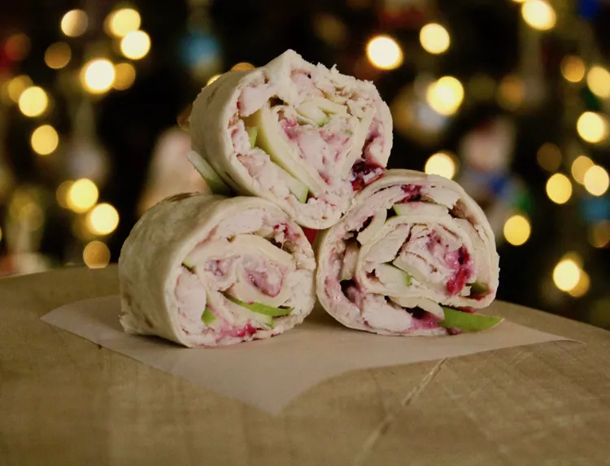

Pinwheels de pavo y arándanos

Descripcion
Estos rollitos de pavo y arándanos, fáciles y rápidos de preparar, son una excelente manera de aprovechar la
salsa de arándanos que te quedó del Día de Acción de Gracias. Puedes prepararlos en cualquier momento del año
con pavo de charcutería y salsa de arándanos enlatada.
Ingredientes
- ½ taza de queso crema, ablandado
- ½ taza de salsa de arándanos rojos enteros
- 4 tortillas de harina (10 pulgadas)
- 12 onzas de pavo asado cortado en rodajas finas
- 4 onzas de queso suizo cortado en rodajas finas y picado
- 2 onzas de manzana Granny Smith cortada en rodajas finas
Pasos
- Mezcle el queso crema y la salsa de arándanos en un bol hasta que estén bien combinados.
- Unte 1/4 de la mezcla de queso crema sobre toda la superficie de cada tortilla, luego cubra con pavo, queso suizo y manzana. Enrolle las tortillas firmemente sobre los rellenos y envuélvalas en film transparente; refrigérelas durante al menos 1 hora.
- Desenvuelva las tortillas; corte cada una en ocho trozos y sirva.